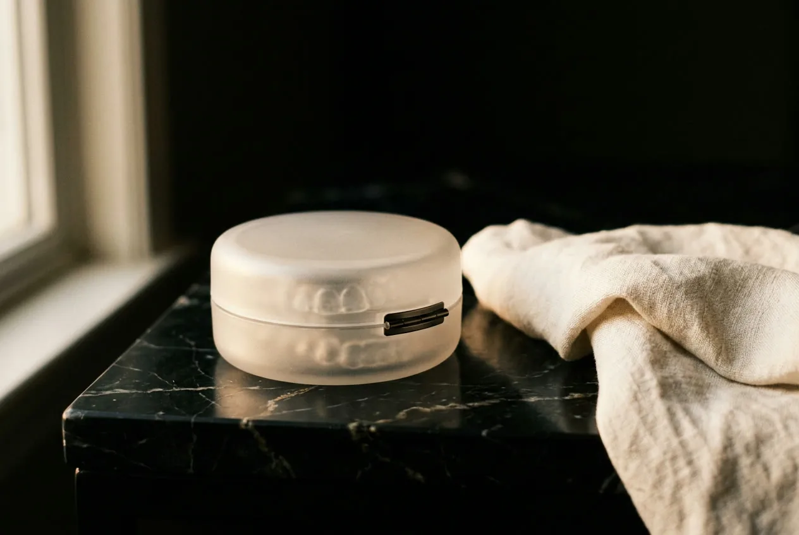
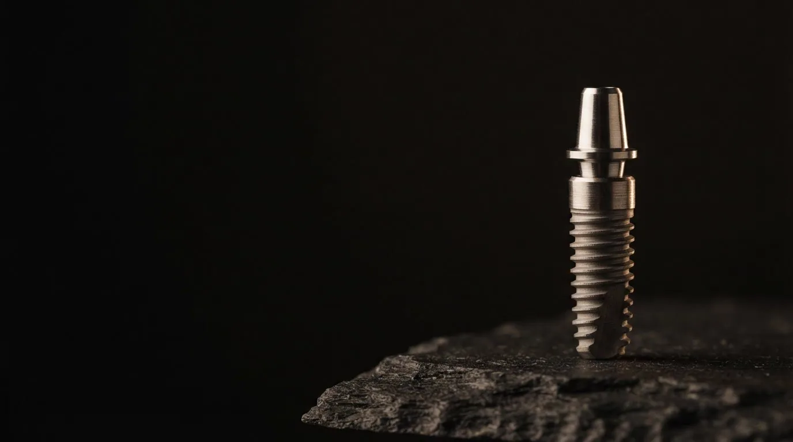
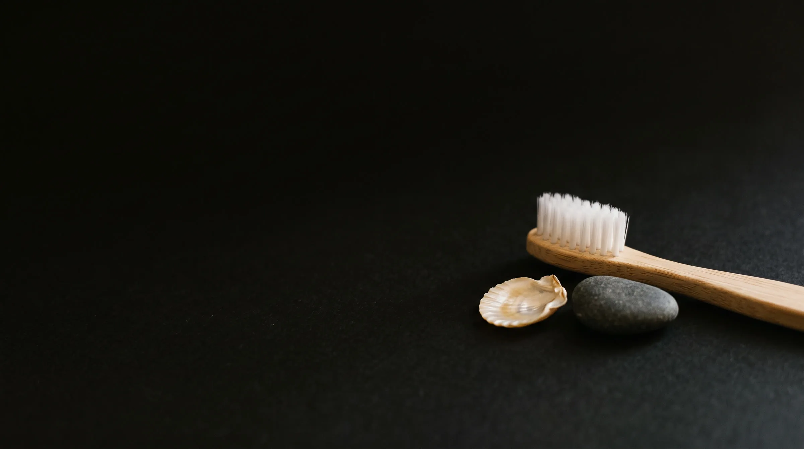
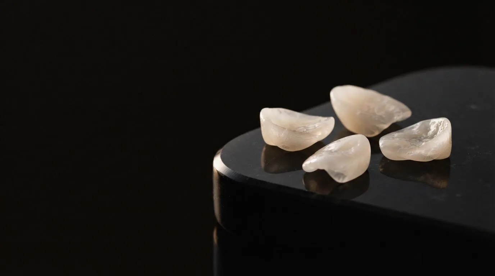
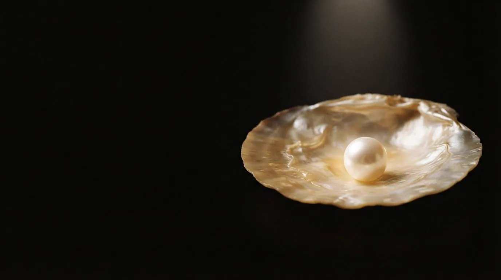

Notas da clínica.
Artigos curtos, escritos pela nossa equipa, para decidir com mais informação.

A rotina da manhã que protege o esmalte
Porque não deve escovar logo a seguir ao café, quanto tempo esperar depois de um sumo de laranja e outros hábitos pequenos que fazem diferença ao fim de anos.
Por Dra. Helena Vaz MonteiroLer artigo
Alinhadores invisíveis: o que muda no seu dia a dia
Quantas horas por dia, como comer, como limpar. Respostas práticas antes de começar.
Ler artigo
Como escolhemos a cor de uma faceta
Luz, idade, tom de pele: o processo por trás de um sorriso que não parece artificial.
Ler artigo
Implante ou ponte? Como decidimos em conjunto
As vantagens de cada opção e as perguntas que deve fazer antes de escolher.
Ler artigo
A primeira consulta do seu filho, passo a passo
O que acontece, quanto tempo demora e como preparar a criança em casa.
Ler artigo
Facetas sem desgaste: quando são possíveis
Em que casos conseguimos colar facetas sem tocar no esmalte, e quando não.
Ler artigo
Branqueamento: o que esperar da primeira semana
Sensibilidade, alimentação e cuidados para manter o resultado durante mais tempo.
Ler artigoUm artigo por mês, sem publicidade.

A primeira conversa é sem compromisso.
Sessenta minutos com o médico que o vai acompanhar, exame 3D incluído e um plano escrito para levar para casa. Respondemos no próprio dia útil.